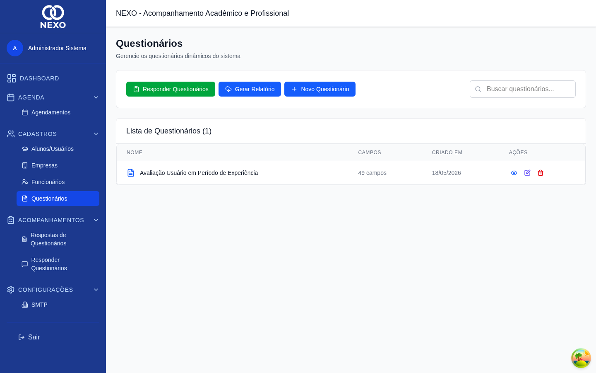
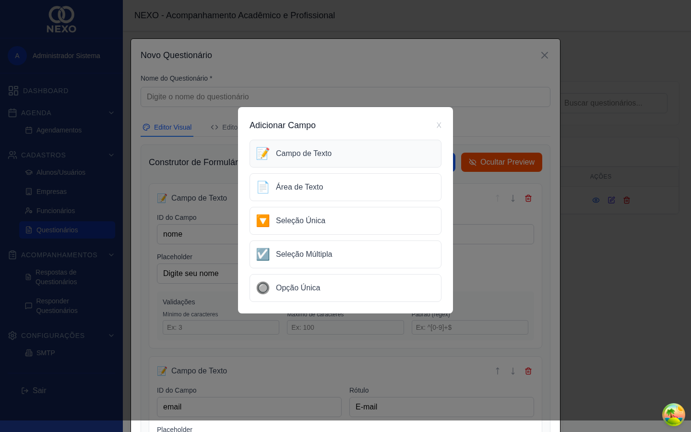
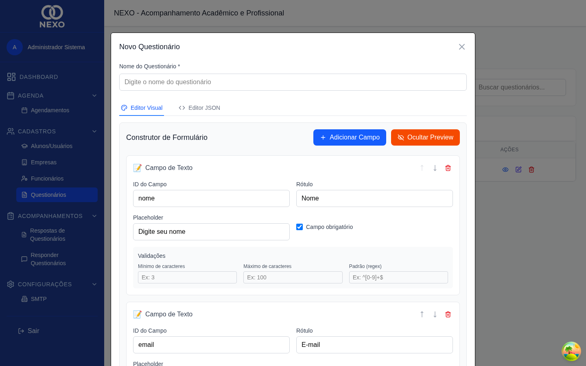
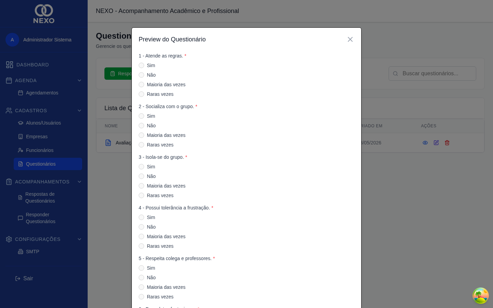
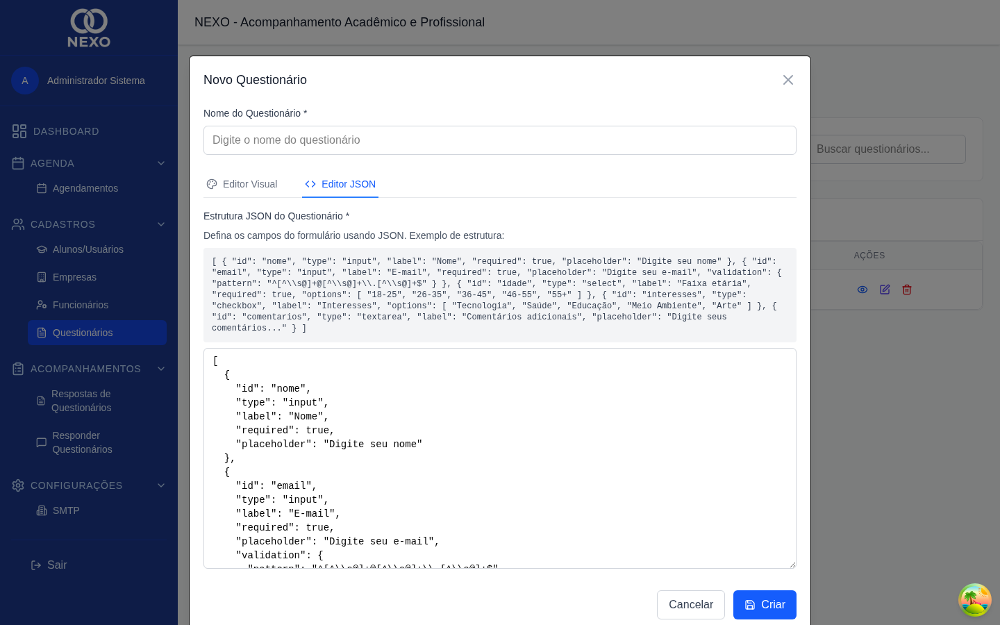

Questionários
Questionários são formulários personalizados que você aplica aos alunos para coletar informações ao longo do acompanhamento. Use o construtor visual para montar perguntas sem escrever código.
| Ação | ADM | RH | COORD | PROF | DIR |
|---|---|---|---|---|---|
| Criar / editar / excluir | ✓ | — | ✓ | ✓ | ✓ |
| Visualizar pré-visualização | ✓ | — | ✓ | ✓ | ✓ |
1. Acessar a lista de questionários
No menu, abra Cadastros → Questionários. A lista mostra cada questionário com a quantidade de campos e a data de criação.

2. Criar um novo questionário
-
Clicar em "Novo Questionário"
Abre o construtor visual em branco com apenas o nome.

Construtor visual pronto para receber campos. -
Dar um nome ao questionário
Escolha um nome claro como "Avaliação Semestral" ou "Feedback de Estágio". Esse nome aparece para quem for responder.
-
Adicionar campos
Clique em "+ Adicionar Campo". Selecione o tipo de campo:
- Texto — resposta curta de uma linha.
- Área de Texto — resposta longa.
- Seleção Única — dropdown com opções.
- Seleção Múltipla — caixas para marcar.
- Opção Única — radio buttons.

Tipos de campo disponíveis no construtor. -
Configurar cada campo
Defina o rótulo, o placeholder (texto de ajuda) e marque se é obrigatório. Para campos de seleção, adicione as opções uma a uma.

Construtor com 3 campos de tipos diferentes. -
Reordenar e remover
Use as setas para subir ou descer um campo na lista, e o ícone de lixeira para removê-lo.
-
Pré-visualizar
Clique no ícone de olho para abrir a pré-visualização do questionário como o aluno verá.

Como o questionário aparece para quem vai responder. -
Salvar
Clique em Salvar. O questionário fica disponível para ser respondido em Responder questionários.
3. Editor JSON (avançado)
Para casos avançados, é possível alternar para a aba JSON e editar diretamente a estrutura do questionário. Erros de sintaxe são exibidos abaixo do editor.

Alterar um questionário que já tem respostas pode quebrar a leitura dessas respostas. Quando precisar mudar muito, prefira criar um novo.